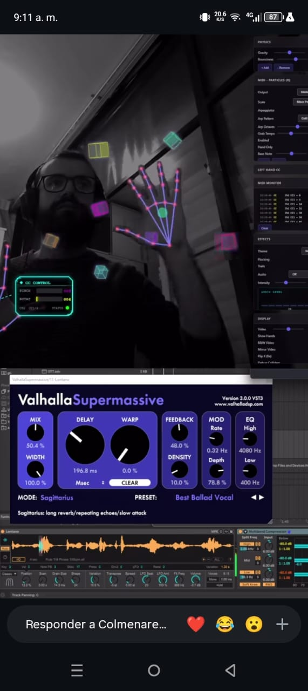

Motor Biométrico Heurístico · Tracking AR en Tiempo Real
v2.8 · AutoTrackPro.dll · by @thex_led
AutoTrackPro es un plugin FFGL de una sola DLL para Resolume Arena que lleva el tracking biométrico AR al escenario en vivo. Desarrollado como alternativa de alto rendimiento a MediaPipe, combina detección de piel por GPU, clustering de movimiento persistente y zoom cinematográfico para crear una experiencia visual de cámara inteligente sin ningún lag. Un solo archivo — AutoTrackPro.dll — es todo lo que necesitas.
Filtra el fondo, luces y público. Solo detecta piel humana. Esencial para escenarios complejos con iluminación dinámica.
HUD con puntos y líneas de neón que conectan cara, cuello y manos. Esqueleto anatómico lógico y visualmente impactante.
Modo de bloqueo rojo para fijar el tracking a un artista específico, ignorando al público y al resto de la banda.
Movimiento de cámara suave con física de velocidad. Mantiene el rostro en el punto de interés como un operador humano.
Agrupa puntos de movimiento en clusters con ID y vida propia. Rastreo estable incluso en movimientos rápidos o parcialmente ocultos.
AutoTrackPro es el híbrido ideal: la ligereza de un efecto clásico de video con la inteligencia visual de las cámaras AR modernas. Listo para festivales y entornos profesionales.